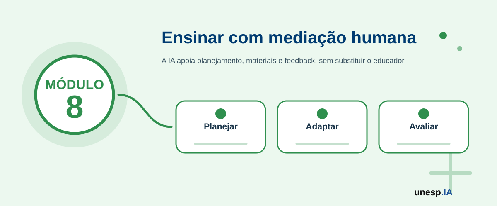

Inteligência Artificial na Educação
Ferramentas relacionadas neste módulo

Apresentação
A Inteligência Artificial vem transformando a forma como professores, coordenadores, gestores escolares, estudantes e instituições educacionais planejam, produzem materiais, acompanham aprendizagens, personalizam atividades, organizam informações e apoiam decisões pedagógicas.
Na educação, a IA pode auxiliar na criação de planos de aula, elaboração de atividades, produção de materiais didáticos, adaptação de linguagem, geração de exercícios, revisão de textos, organização de estudos, apoio à inclusão, análise de dados educacionais e acompanhamento de indicadores. Também pode apoiar professores na personalização da aprendizagem e na construção de experiências mais interativas e acessíveis.
Entretanto, o uso da IA na educação exige atenção especial à ética, autoria, avaliação, privacidade, proteção de dados, equidade, vieses, dependência tecnológica e papel do professor. A IA não substitui o docente, a mediação pedagógica, a relação humana, o planejamento crítico nem a responsabilidade institucional.
O Módulo 8 – Inteligência Artificial na Educação tem como objetivo capacitar professores, coordenadores, gestores escolares, estudantes e profissionais da educação para compreender e aplicar IA em práticas pedagógicas, produção de materiais, planejamento, avaliação, apoio à aprendizagem e gestão educacional, de forma crítica, ética, segura e responsável.
1. Organização do Módulo
Carga horária total
16 horas.
Público recomendado
Professores, coordenadores pedagógicos, gestores escolares, profissionais da educação, estudantes de licenciatura, monitores, tutores, educadores sociais, equipes de apoio pedagógico e participantes interessados no uso educacional da Inteligência Artificial.
Objetivo geral
Capacitar participantes para utilizar Inteligência Artificial no planejamento pedagógico, produção de materiais didáticos, elaboração de atividades, personalização da aprendizagem, apoio à inclusão, avaliação formativa, organização de estudos e gestão educacional, com atenção à ética, autoria, privacidade, equidade e responsabilidade docente.
Competências desenvolvidas
Ao final do módulo, espera-se que o participante seja capaz de:
- compreender possibilidades e limites da IA na educação;
- utilizar IA para apoiar planejamento de aulas e sequências didáticas;
- produzir materiais didáticos com apoio de IA;
- elaborar atividades, exercícios, quizzes (questionários) e estudos de caso;
- adaptar linguagem e nível de dificuldade de conteúdos;
- utilizar IA para apoiar inclusão e acessibilidade;
- criar instrumentos de avaliação formativa;
- utilizar IA para apoiar feedback pedagógico;
- orientar estudantes no uso responsável da IA;
- reconhecer riscos de plágio, dependência, desinformação e uso inadequado;
- compreender cuidados com dados educacionais, LGPD e privacidade;
- utilizar IA para organizar dados e indicadores educacionais simples;
- produzir um plano de aula, sequência didática ou material educacional com apoio de IA.
2. Estrutura das Unidades
| Unidade | Tema | Carga horária |
|---|---|---|
| Unidade 8.1 | IA na educação: possibilidades, limites e papel docente | 2h |
| Unidade 8.2 | IA para planejamento pedagógico e planos de aula | 3h |
| Unidade 8.3 | IA para produção de materiais didáticos e recursos visuais | 3h |
| Unidade 8.4 | IA para atividades, avaliação formativa e feedback | 3h |
| Unidade 8.5 | IA para personalização, inclusão e acessibilidade | 2h |
| Unidade 8.6 | Ética, autoria, dados educacionais e laboratório final | 3h |
| Total | 16h |
A sequência pedagógica segue a lógica:
contexto educacional → planejamento → materiais → atividades/avaliação → inclusão → ética e produto final
Unidade 8.1 – IA na educação: possibilidades, limites e papel docente
Carga horária
2 horas
Objetivo da unidade
Apresentar as principais possibilidades de uso da IA na educação, discutindo seus benefícios, limites, riscos e o papel insubstituível do professor na mediação pedagógica.
Situação de abertura
Uma professora precisa preparar uma aula sobre sustentabilidade para uma turma com diferentes níveis de aprendizagem.
Um coordenador pedagógico deseja organizar dados de frequência dos alunos.
Um estudante usa IA para resumir um texto, mas não sabe se a resposta está correta.
Uma escola quer produzir materiais mais acessíveis para alunos com dificuldades de leitura.
Um professor quer criar atividades mais diversificadas, mas tem pouco tempo.
A IA pode ajudar em muitas dessas tarefas, mas a decisão pedagógica continua sendo humana.
Conceitos principais
IA na educação
IA na educação é o uso de sistemas inteligentes para apoiar processos de ensino, aprendizagem, gestão, avaliação, produção de materiais e acompanhamento educacional.
Papel do professor
O professor continua sendo responsável por:
- planejar a aprendizagem;
- compreender o contexto da turma;
- interpretar necessidades dos estudantes;
- selecionar estratégias didáticas;
- avaliar criticamente conteúdos;
- mediar discussões;
- orientar o uso ético da tecnologia;
- promover aprendizagem significativa.
IA como apoio pedagógico
A IA pode ser uma ferramenta de apoio para:
- gerar ideias de aula;
- criar exemplos;
- adaptar linguagem;
- elaborar exercícios;
- criar quizzes;
- revisar textos;
- organizar planos;
- resumir materiais;
- produzir recursos visuais;
- apoiar feedbacks;
- sugerir atividades diferenciadas.
Possibilidades de uso da IA na educação
Para professores
- planejamento de aula;
- elaboração de atividades;
- criação de rubricas;
- produção de materiais;
- adaptação de textos;
- geração de exemplos;
- construção de avaliações;
- feedback inicial.
Para estudantes
- explicações personalizadas;
- revisão de conteúdos;
- criação de planos de estudo;
- perguntas de autoavaliação;
- organização de resumos;
- tradução e simplificação de textos.
Para gestores
- análise de frequência;
- acompanhamento de indicadores;
- organização de relatórios;
- identificação de demandas;
- comunicação com famílias;
- apoio à tomada de decisão.
Limites e riscos
A IA pode:
- gerar respostas incorretas;
- inventar referências;
- simplificar demais conteúdos;
- reproduzir vieses;
- favorecer cópia sem aprendizagem;
- comprometer autoria;
- expor dados de estudantes;
- criar dependência tecnológica;
- padronizar excessivamente práticas pedagógicas.
A IA não substitui o professor. Ela pode apoiar tarefas, mas não possui sensibilidade pedagógica, conhecimento da turma, responsabilidade ética nem compreensão plena do contexto educacional.
Escolha uma situação educacional e responda:
- Como a IA poderia ajudar?
- O que ainda depende do professor?
- Que risco pode existir?
- Que cuidado seria necessário?
Atividade guiada – Mapa de usos da IA na educação
Objetivo
Identificar possibilidades e limites do uso da IA em contextos educacionais.
Passo a passo
- Dividir a turma em grupos.
- Cada grupo escolhe um contexto:
- professor;
- estudante;
- coordenação;
- gestão escolar;
- educação inclusiva;
- avaliação.
- O grupo lista:
- três usos possíveis da IA;
- dois benefícios;
- dois riscos;
- cuidados necessários;
- papel do professor ou gestor.
- Cada grupo apresenta.
- O instrutor organiza um mapa coletivo.
Mapa de usos, benefícios, riscos e cuidados da IA na educação.
A IA pode ensinar? Ou ela apoia processos de ensino e aprendizagem conduzidos por pessoas?
Unidade 8.2 – IA para planejamento pedagógico e planos de aula
Carga horária
3 horas
Objetivo da unidade
Capacitar os participantes para utilizar IA no apoio ao planejamento pedagógico, elaboração de planos de aula, sequências didáticas, objetivos de aprendizagem e organização de estratégias de ensino.
Situação de abertura
Uma professora precisa preparar uma aula introdutória sobre meio ambiente.
Outro professor quer adaptar o conteúdo para estudantes com diferentes níveis de conhecimento.
Um coordenador quer organizar uma sequência didática interdisciplinar.
Uma tutora precisa planejar uma oficina prática para jovens.
Um educador social quer criar uma atividade lúdica para adultos.
A IA pode ajudar a organizar ideias, sugerir atividades, propor etapas e adaptar linguagem, mas o planejamento final precisa ser validado pelo educador.
Conceitos principais
Planejamento pedagógico
Planejamento pedagógico é o processo de organizar objetivos, conteúdos, metodologias, atividades, recursos, avaliação e tempo de aprendizagem.
Plano de aula
Plano de aula é um documento que organiza uma aula específica.
Geralmente contém:
- tema;
- público;
- objetivos;
- conteúdos;
- metodologia;
- recursos;
- tempo;
- atividade;
- avaliação;
- referências ou materiais de apoio.
Sequência didática
Sequência didática é um conjunto de aulas ou atividades organizadas em progressão, com objetivo de desenvolver determinado conhecimento ou competência.
Como a IA pode apoiar o planejamento?
A IA pode ajudar a:
- criar objetivos de aprendizagem;
- organizar conteúdos por etapas;
- sugerir metodologias;
- propor exemplos;
- criar atividades práticas;
- adaptar conteúdos por nível;
- sugerir recursos;
- criar roteiros de aula;
- propor perguntas de discussão;
- sugerir avaliação formativa;
- criar variações de uma mesma atividade.
Exemplo de prompt (instrução para a IA) para plano de aula
Crie um plano de aula sobre [tema] para alunos do [nível de ensino]. O plano deve conter objetivo, conteúdos, metodologia, atividade prática, recursos, tempo estimado, avaliação formativa e adaptação para estudantes com dificuldades de aprendizagem.
Exemplo de prompt para sequência didática
Crie uma sequência didática de três aulas sobre [tema], com progressão do conteúdo, atividade prática em cada aula, perguntas para discussão e forma de avaliação.
Exemplo de prompt para adaptação
Adapte esta atividade para três níveis de dificuldade: iniciante, intermediário e avançado. Mantenha o mesmo objetivo de aprendizagem.
Um professor pode pedir à IA uma primeira versão de plano de aula, depois revisar:
- se o objetivo está adequado;
- se o conteúdo está correto;
- se o tempo é realista;
- se a atividade funciona para a turma;
- se há inclusão;
- se a avaliação faz sentido;
- se o material respeita o currículo e o contexto da escola.
A IA pode criar planos de aula genéricos. O professor deve adaptar ao currículo, à realidade da turma, ao tempo disponível, aos recursos da escola e às necessidades dos estudantes.
Escolha um tema e peça à IA:
- um objetivo de aprendizagem;
- um plano de aula de 50 minutos;
- uma atividade prática;
- uma pergunta de reflexão;
- uma forma de avaliação.
Depois revise se o plano é adequado à realidade da turma.
Atividade guiada – Plano de aula com IA
Objetivo
Criar um plano de aula ou oficina com apoio de IA.
Passo a passo
- Escolher tema e público-alvo.
- Definir duração da aula.
- Criar um prompt completo para planejamento.
- Gerar uma primeira versão com IA.
- Revisar objetivo, conteúdo e metodologia.
- Pedir adaptações de linguagem e nível.
- Inserir atividade prática.
- Criar forma de avaliação.
- Revisar com critérios pedagógicos.
- Organizar versão final.
Ferramentas
ChatGPT, Gemini, Copilot, Google Docs, Google Slides, Canva e NotebookLM.
Plano de aula ou sequência didática produzida com apoio de IA.
Um plano de aula gerado por IA é suficiente ou precisa ser transformado pelo professor a partir do conhecimento da turma?
Unidade 8.3 – IA para produção de materiais didáticos e recursos visuais
Carga horária
3 horas
Objetivo da unidade
Capacitar os participantes para produzir materiais didáticos, recursos visuais, explicações, infográficos, slides, exemplos e atividades de apoio com uso de IA.
Situação de abertura
Uma professora quer explicar fotossíntese de forma visual.
Um professor de matemática precisa criar exemplos graduais.
Uma coordenadora deseja preparar um infográfico sobre frequência escolar.
Um educador social quer produzir material simples sobre segurança digital.
Um tutor precisa criar slides acessíveis para uma oficina.
A IA pode apoiar a criação de materiais didáticos mais claros, visuais e adaptados ao público.
Conceitos principais
Material didático é qualquer recurso utilizado para apoiar o ensino e a aprendizagem.
Pode incluir:
- textos explicativos;
- apostilas;
- slides;
- exercícios;
- estudos de caso;
- mapas mentais;
- infográficos;
- cartões;
- roteiros;
- vídeos;
- quizzes;
- imagens;
- exemplos resolvidos.
Como a IA pode apoiar materiais didáticos?
A IA pode ajudar a:
- explicar conceitos;
- gerar exemplos;
- criar analogias;
- simplificar textos;
- organizar tópicos;
- criar exercícios;
- produzir estudos de caso;
- sugerir imagens;
- criar roteiros de slides;
- gerar infográficos;
- adaptar linguagem;
- criar glossários;
- criar perguntas frequentes.
Exemplos de prompts (instruções para a IA)
Explicação didática
Explique [conceito] para estudantes iniciantes, usando linguagem simples, analogia, exemplo e resumo final.
Exemplos graduais
Crie cinco exemplos sobre [tema], começando do mais simples e aumentando a dificuldade gradualmente.
Glossário
Crie um glossário com dez termos sobre [tema], com definição simples e exemplo.
Infográfico
Crie o conteúdo textual para um infográfico sobre [tema], com título, três blocos principais e dicas finais.
Slides
Crie uma estrutura de 8 slides sobre [tema], com título, tópicos principais, sugestão de imagem e fala do professor.
Produção visual com IA
Ferramentas como Canva, Canva AI, DALL·E, Leonardo AI e Adobe Firefly podem apoiar:
- capas de materiais;
- ilustrações;
- cartazes;
- diagramas;
- personagens;
- cards;
- infográficos;
- imagens de apoio.
Boas práticas para materiais didáticos
Um bom material deve ser:
- claro;
- correto;
- organizado;
- visualmente limpo;
- adequado ao nível dos estudantes;
- acessível;
- contextualizado;
- com exemplos;
- com atividades;
- com linguagem inclusiva.
A IA pode gerar conteúdo errado, exemplos inadequados, imagens confusas ou textos genéricos. Todo material didático deve ser revisado pelo professor.
Escolha um tema e peça à IA:
- uma explicação simples;
- uma analogia;
- três exemplos;
- cinco perguntas;
- uma sugestão de imagem;
- um resumo final.
Atividade guiada – Material didático com IA
Objetivo
Produzir um material didático curto com apoio de IA.
Passo a passo
- Escolher tema e público.
- Definir formato:
- slides;
- infográfico;
- folha de atividade;
- mapa mental;
- cartaz;
- roteiro de aula.
- Pedir à IA estrutura inicial.
- Criar textos explicativos.
- Criar exemplos e atividade.
- Gerar ou escolher imagens.
- Organizar o material em Canva, Google Slides ou Docs.
- Revisar conteúdo, linguagem e acessibilidade.
- Salvar versão final.
Ferramentas
ChatGPT, Gemini, Copilot, Canva, Canva AI, Google Slides, Google Docs, DALL·E, Leonardo AI e NotebookLM.
Material didático curto produzido com apoio de IA.
Um material didático com aparência bonita garante aprendizagem? O que mais precisa ser considerado?
Unidade 8.4 – IA para atividades, avaliação formativa e feedback
Carga horária
3 horas
Objetivo da unidade
Capacitar os participantes para utilizar IA na criação de atividades, exercícios, quizzes, estudos de caso, rubricas, instrumentos de avaliação formativa e feedback pedagógico.
Situação de abertura
Uma professora quer verificar se os alunos entenderam o conteúdo.
Um professor precisa criar questões de diferentes níveis.
Uma coordenadora quer elaborar uma rubrica para avaliar projetos.
Um tutor deseja dar feedback mais claro aos participantes.
Um estudante quer praticar com perguntas de revisão.
A IA pode apoiar a criação de instrumentos de avaliação, mas a avaliação pedagógica continua exigindo critério humano.
Conceitos principais
Avaliação formativa
Avaliação formativa é aquela realizada durante o processo de aprendizagem, com o objetivo de acompanhar avanços, identificar dificuldades e orientar melhorias.
Feedback
Feedback é uma devolutiva que ajuda o estudante a compreender seu desempenho e saber como melhorar.
Rubrica
Rubrica é um instrumento que apresenta critérios de avaliação e níveis de desempenho.
Como a IA pode apoiar avaliações?
A IA pode ajudar a:
- criar perguntas;
- variar níveis de dificuldade;
- elaborar questões objetivas;
- criar questões abertas;
- gerar estudos de caso;
- criar situações-problema;
- montar quizzes;
- criar rubricas;
- sugerir feedbacks;
- adaptar atividades;
- criar autoavaliações.
Exemplos de prompts
Questões objetivas
Crie cinco questões de múltipla escolha sobre [tema], com quatro alternativas, gabarito e explicação da resposta correta.
Questões abertas
Crie três perguntas abertas sobre [tema] que estimulem reflexão e aplicação prática.
Rubrica
Crie uma rubrica para avaliar uma apresentação de grupo sobre [tema], com critérios de clareza, conteúdo, criatividade e participação.
Feedback
Reescreva este feedback de forma mais construtiva, respeitosa e orientada à melhoria: [colar feedback].
Estudo de caso
Crie um estudo de caso curto sobre [tema], com perguntas para discussão.
Cuidados na criação de avaliações
Antes de usar questões geradas por IA, verifique:
- se o conteúdo está correto;
- se o nível está adequado;
- se a pergunta é clara;
- se há apenas uma alternativa correta, quando for múltipla escolha;
- se não há ambiguidade;
- se o gabarito está correto;
- se a questão avalia compreensão, e não apenas memorização;
- se respeita o contexto da turma.
IA e feedback pedagógico
A IA pode ajudar a estruturar feedbacks mais claros e respeitosos.
Um bom feedback deve:
- reconhecer o que foi feito corretamente;
- apontar o que precisa melhorar;
- sugerir próximos passos;
- ser específico;
- ser respeitoso;
- estimular aprendizagem.
A IA não deve ser usada para corrigir automaticamente trabalhos de estudantes sem supervisão, especialmente quando a avaliação tem impacto formal. O professor deve revisar critérios, respostas e feedbacks.
Escolha um tema e peça à IA:
- três questões fáceis;
- três questões intermediárias;
- três questões desafiadoras;
- gabarito comentado;
- uma rubrica simples.
Depois revise a qualidade das perguntas.
Atividade guiada – Instrumento de avaliação com IA
Objetivo
Criar um conjunto de atividades ou instrumento de avaliação formativa com apoio de IA.
Passo a passo
- Escolher tema e público.
- Definir objetivo da avaliação.
- Pedir à IA questões ou atividades.
- Solicitar variação de dificuldade.
- Criar gabarito ou critérios.
- Criar rubrica simples.
- Revisar clareza, nível e correção.
- Organizar em Google Forms, Kahoot, Quizizz, Docs ou Slides.
- Testar com colegas.
- Ajustar a versão final.
Ferramentas
ChatGPT, Gemini, Copilot, Google Forms, Kahoot, Quizizz, Mentimeter, Google Docs e Google Slides.
Atividade, quiz (questionário), rubrica ou instrumento de avaliação formativa produzido com apoio de IA.
A IA pode gerar perguntas, mas quem compreende melhor o que a turma precisa aprender?
Unidade 8.5 – IA para personalização, inclusão e acessibilidade
Carga horária
2 horas
Objetivo da unidade
Apresentar possibilidades de uso da IA para apoiar personalização da aprendizagem, inclusão educacional, acessibilidade e adaptação de materiais para diferentes necessidades.
Situação de abertura
Em uma mesma turma, alguns estudantes aprendem rapidamente, outros precisam de mais exemplos, alguns preferem imagens, outros têm dificuldade de leitura, alguns precisam de recursos de acessibilidade e outros necessitam de desafios adicionais.
A IA pode ajudar o professor a criar variações de explicações, atividades e materiais, mas a inclusão exige escuta, acompanhamento e responsabilidade pedagógica.
Conceitos principais
Personalização da aprendizagem
É a adaptação de estratégias, recursos e atividades considerando ritmos, interesses e necessidades dos estudantes.
Inclusão
É o compromisso de garantir participação, acesso, aprendizagem e respeito às diferenças.
Acessibilidade
É a criação de condições para que todos possam acessar conteúdos, ambientes e atividades.
Como a IA pode apoiar?
A IA pode ajudar a:
- simplificar textos;
- criar versões com diferentes níveis de dificuldade;
- gerar exemplos variados;
- criar recursos visuais;
- transformar texto em roteiro de áudio;
- criar legendas;
- organizar glossários;
- propor atividades alternativas;
- criar materiais em linguagem simples;
- apoiar estudantes com dificuldades de leitura;
- criar desafios adicionais para estudantes avançados.
Exemplos de prompts
Linguagem simples
Reescreva este texto em linguagem simples para estudantes com dificuldade de leitura, mantendo as ideias principais.
Três níveis
Crie três versões da mesma atividade: iniciante, intermediária e avançada.
Recurso visual
Sugira uma forma visual de explicar [tema] para estudantes iniciantes.
Acessibilidade
Transforme este conteúdo em um roteiro de áudio curto, com linguagem clara e pausas naturais.
Inclusão
Sugira adaptações para esta atividade considerando estudantes com diferentes ritmos de aprendizagem.
A IA pode sugerir adaptações, mas não substitui avaliação pedagógica, atendimento especializado, diálogo com a família, acompanhamento institucional ou políticas de inclusão.
Escolha um texto curto e peça à IA:
- versão mais simples;
- versão com exemplo visual;
- versão em tópicos;
- atividade de nível básico;
- atividade de nível avançado.
Atividade guiada – Adaptação inclusiva de material
Objetivo
Adaptar um material educacional para diferentes perfis de aprendizagem.
Passo a passo
- Escolher um conteúdo ou atividade.
- Pedir à IA uma versão simplificada.
- Pedir uma versão mais desafiadora.
- Pedir uma representação visual ou analogia.
- Criar um glossário de termos.
- Criar uma atividade prática.
- Revisar se as adaptações mantêm o objetivo original.
- Organizar o material final.
Ferramentas
ChatGPT, Gemini, Copilot, Canva, Google Docs, Google Slides, ferramentas de leitura em voz alta e legendagem.
Material adaptado com foco em personalização, inclusão ou acessibilidade.
Personalizar a aprendizagem significa criar caminhos diferentes para alcançar o mesmo objetivo ou diminuir a expectativa de aprendizagem?
Unidade 8.6 – Ética, autoria, dados educacionais e laboratório final
Carga horária
3 horas
Objetivo da unidade
Discutir ética, autoria, privacidade, dados educacionais, LGPD e responsabilidade no uso da IA na educação, integrando o módulo por meio da produção de um plano de aula, sequência didática ou material educacional com apoio de IA.
Situação de abertura
Um estudante entrega um trabalho totalmente gerado por IA.
Um professor insere dados de alunos em uma ferramenta externa.
Uma escola quer usar IA para identificar estudantes em risco.
Um docente usa IA para corrigir atividades.
Uma coordenação usa IA para criar relatórios sobre desempenho.
Essas situações mostram que o uso da IA na educação exige regras claras, orientação, ética e responsabilidade.
Conceitos principais
Autoria
Autoria envolve reconhecer quem produziu, organizou, revisou e assumiu responsabilidade por um conteúdo.
Quando a IA é usada, é importante indicar seu papel como ferramenta de apoio, especialmente em contextos acadêmicos e educacionais.
Plágio e uso inadequado
O uso inadequado ocorre quando o estudante apresenta como próprio um conteúdo gerado por IA sem compreensão, revisão ou autorização.
Dados educacionais
São informações relacionadas a estudantes, professores, turmas e processos de ensino.
Exemplos:
- notas;
- frequência;
- desempenho;
- comportamento;
- atividades;
- avaliações;
- relatórios;
- dados familiares;
- informações de saúde ou necessidades educacionais.
LGPD na educação
Dados educacionais podem conter dados pessoais e sensíveis. Por isso, devem ser tratados com finalidade clara, segurança, necessidade, consentimento quando aplicável e responsabilidade institucional.
Cuidados éticos
- não inserir dados pessoais de estudantes em ferramentas externas sem autorização;
- não usar IA para decisões automáticas sem revisão humana;
- orientar estudantes sobre uso permitido;
- avaliar processo, não apenas produto final;
- incentivar pensamento crítico;
- reconhecer limites da IA;
- evitar dependência tecnológica;
- discutir autoria e integridade acadêmica;
- validar informações geradas por IA.
Regras de uso responsável para estudantes
Uma instituição ou professor pode orientar:
- quando a IA pode ser usada;
- para quais tarefas;
- como declarar o uso;
- o que não é permitido;
- como revisar respostas;
- como evitar cópia;
- como proteger dados;
- como usar IA para aprender, não para substituir a aprendizagem.
Exemplo de orientação aos estudantes
Você pode usar IA para tirar dúvidas, pedir exemplos, revisar clareza e organizar ideias. Porém, deve compreender o conteúdo, verificar informações, produzir sua própria análise e informar quando a ferramenta foi utilizada, conforme orientação do professor.
Laboratório final
O produto final do módulo será um plano de aula, sequência didática ou material educacional produzido com apoio de IA.
Estrutura do produto final
O material deve conter:
- tema;
- público-alvo;
- objetivo de aprendizagem;
- conteúdo;
- metodologia;
- atividade prática;
- recurso produzido com IA;
- forma de avaliação;
- adaptação inclusiva;
- cuidados éticos;
- orientação sobre uso responsável da IA;
- reflexão final.
Atividade prática – Produção educacional com IA
Objetivo
Criar um produto educacional aplicável com apoio de IA.
Passo a passo
- Escolher tema e público.
- Definir objetivo de aprendizagem.
- Criar plano ou sequência didática.
- Produzir material de apoio.
- Criar atividade ou avaliação.
- Incluir adaptação para diferentes níveis.
- Elaborar orientação de uso responsável da IA.
- Revisar conteúdo, linguagem e ética.
- Organizar em documento ou apresentação.
- Apresentar em até cinco minutos.
Ferramentas
ChatGPT, Gemini, Copilot, NotebookLM, Canva, Google Slides, Google Docs, Google Forms, Kahoot, Quizizz, Mentimeter e ferramentas de acessibilidade.
Plano de aula, sequência didática ou material educacional produzido com apoio de IA.
Como usar IA para fortalecer a aprendizagem, e não apenas facilitar a produção de respostas?
Avaliação do Módulo 8
A avaliação será formativa, prática e participativa.
Critérios
- participação nas discussões;
- compreensão dos usos e limites da IA na educação;
- adequação pedagógica dos materiais produzidos;
- clareza dos objetivos de aprendizagem;
- qualidade do plano de aula ou sequência didática;
- criatividade e aplicabilidade;
- cuidado com autoria, ética e privacidade;
- atenção à inclusão e acessibilidade;
- qualidade dos instrumentos de avaliação;
- orientação adequada sobre uso responsável da IA;
- apresentação final do produto.
Produto final do módulo
Ao final do Módulo 8, o participante terá produzido:
Plano de aula, sequência didática ou material educacional produzido com apoio de IA.
Esse produto poderá conter:
- plano de aula;
- sequência didática;
- slides;
- infográfico;
- atividade prática;
- quiz;
- rubrica;
- adaptação inclusiva;
- orientação sobre uso responsável da IA.
Resultado esperado
Ao final do Módulo 8, o participante deverá ser capaz de utilizar Inteligência Artificial como apoio ao planejamento pedagógico, produção de materiais didáticos, elaboração de atividades, avaliação formativa, feedback, personalização, inclusão e gestão educacional, reconhecendo limites, riscos e responsabilidades.
O participante também deverá compreender que a IA deve fortalecer a aprendizagem, a mediação docente, a criatividade, a inclusão e a reflexão crítica, e não substituir o papel do professor, a autoria dos estudantes, a avaliação humana ou a responsabilidade pedagógica.